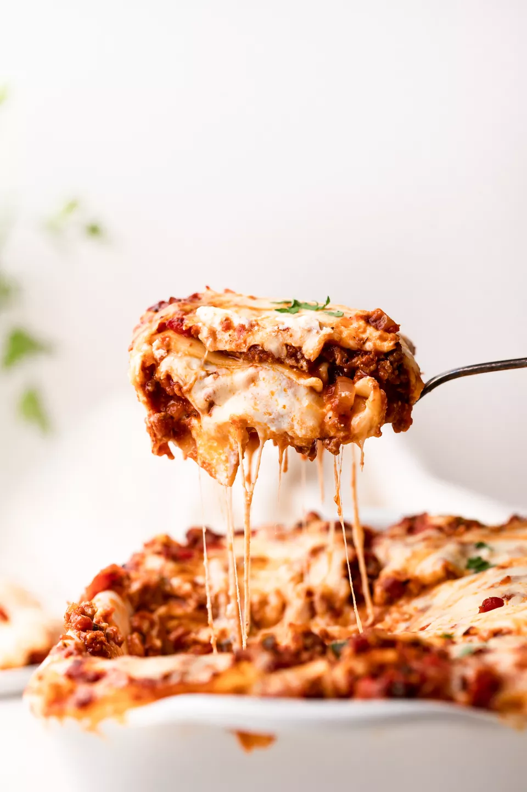

Lasagna

Description
A simple lasagna recipie from Simply Recipies
This is some filler text. Normally it would be a ton of filler text on a blog site to make google SEO happy.
- 2 teaspoons extra virgin olive oil
- 1 pound ground beef chuck
- 1/2 medium onion, diced (about 3/4 cup)
- 1/2 large bell pepper (green, red, or yellow), diced (about 3/4 cup)
- 2 cloves garlic, minced
- 1 (28-ounce)can good-quality tomato sauce
- 3 ounces tomato paste (half a 6-ounce can)
- 1 (14 ounce) can crushed tomatoes
- 2 tablespoons chopped fresh oregano, or 2 teaspoons dried oregano
- 1/4 cup chopped fresh parsley (preferably flat leaf), packed
- 1 tablespoon Italian seasoning
- 1 pinch garlic powder and/or garlic salt
- 1 tablespoon red or white wine vinegar
- 1 tablespoon to 1/4 cup sugar (to taste, optional)
- Salt
Steps
- Boil Water
- Brown Meat
- Mix seasoning, vegetables and meat together and saute
- Add pasta to water for 10 minutes
- Drain pasta
- Layer pasta and sauce mix in baking pan
- Bake for however long it take
- Remove from oven and let cool